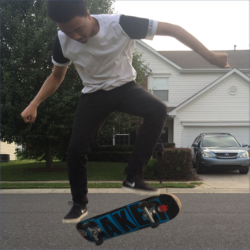

Me, when I used to skateboard back in Highschool
Personal background: Born in New York, but I have lived in Charlotte since 2004.
Professional background: I have only worked some part-time jobs.
Academic background: Attended Olympic High School and now a student at CPCC.
Background in the subject matter of this course: I have been using computers for as long as I can remember. Some experience using the LUA language.
Primary computer platform: Windows 8 on my computer at home.
Reason for taking each course
WEB 110-01: Internet/Web Fundamentals - I never knew how to start developing a website using HTML. I am hoping to learn that skill here.
CTI 110-91: Web, Pgm, & Db Foundation - This class is a requirement for my path of study.
ART 240-05: Painting I - I have always wanted to learn how to paint as a hobby.
Funny story or interesting item about yourself to remember you by: I was the guitarist in a Nirvana cover band my high school friends and I formed.
I'd also like to share: I would love to travel the world and visit many countries. Some of the many places I would like to visit include; England, Spain, and Japan.